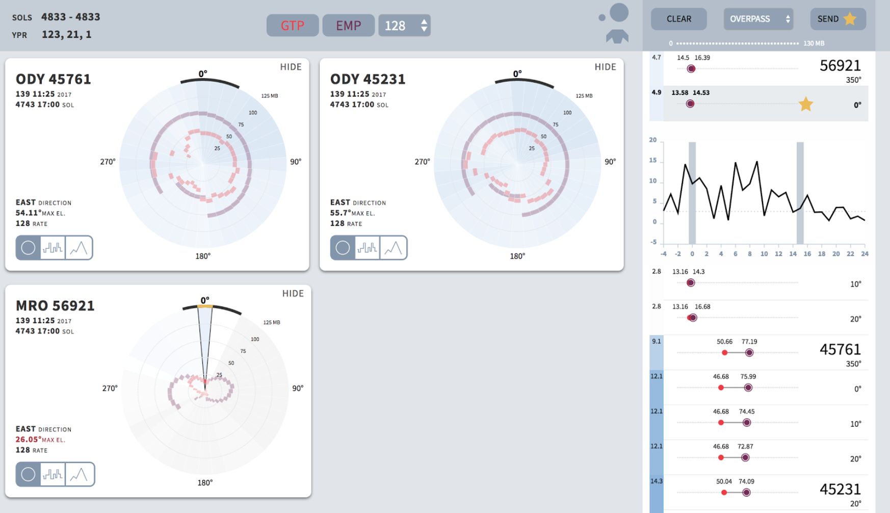

Introducing Meridian
Meridian is a data visualization tool that measures the amount of data the Mars
Opportunity Rover can transmit to overpassing satellites under changing conditions.
Customized for the specific needs of telecommunications operators at the NASA JPL,
Meridian supports efficient and elastic prioritization of goals dependent on
changing conditions. It offers significant advantages over the previous system, transforming a
cumbersome, distributed process into a single, usable interface.

How it works
Meridian was built with the Budo development server, Flexbox for layout,
D3 for scales, calculations, colors, and React for state & view management.
Meridian has been approved for deployment and is currently moving into production to support tactical planning at the NASA JPL.